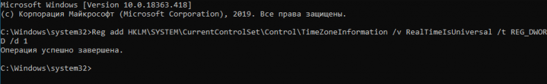
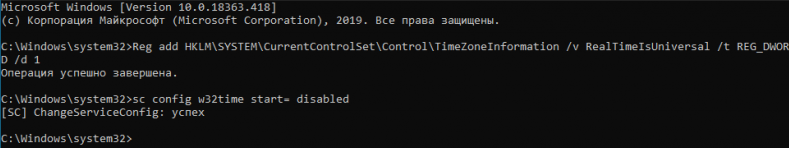
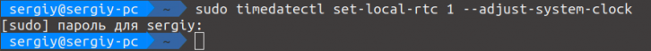
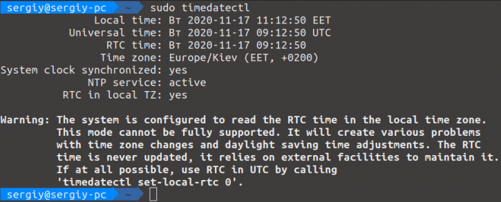

Многие новые пользователи, которые только перешли на Linux с операционной системы Windows, и пока все еще запускают эту систему время от времени, сталкиваются с проблемой, что после загрузки Windows в Ubuntu сбивается время на несколько часов назад или вперед, затем после нескольких перезагрузок уже сложно понять какое сейчас время.
Все это происходит из-за различий формата хранения времени в этих операционных системах. И будет происходить при каждой перезагрузке, сколько бы вы ни устанавливали правильное время. Но эту проблему можно решить. И даже несколькими способами. В этой статье мы рассмотрим, как решить проблему сбивается время в Ubuntu и Windows.
Как я уже сказал, проблема в разных форматах хранения и восстановления времени. В компьютере есть два вида часов. Аппаратные - идут всегда, даже когда компьютер выключен и программные часы, встроенные в ядро. Когда компьютер включается значение аппаратных часов записывается в программные, и в дальнейшем операционная система берет время оттуда. Но Windows и Linux работают по-разному с этими двумя часами. Есть два способа работы:
Так почему же сбивается время Ubuntu и Windows? Вот, допустим, работает Windows, и со временем там все нормально, оно сохранено в формате localtime. Но при перезагрузке в Linux, операционная система берет время Localtime, и думает что это UTC. Таким образом, пользователь будет брать уже правильное время, и прибавлять к нему поправку на часовой пояс. Поэтому время уже будет неверным.
Дальше вы исправили время, и теперь аппаратные часы работают в UTC. Но затем грузите WIndows. Система думает, что это localtime и для установки правильного программного времени добавляет к аппаратному поправку на часовой пояс, например, в нашем случае +3. Дальше каждый пользователь еще раз применяет эту поправку и время уже сбито, опять.
Единственно верный способ решить эту проблему - заставить обе системы работать по одному формату и сделать это совсем не сложно. Причем можно пойти двумя путями: либо заставить Windows работать по UTC, либо Linux по формату localtime, что является не совсем правильным, но вполне возможно. Итак перейдем к решению проблемы сбивается время в Ubuntu.
Итак, если у вас сбивается время Windows и Linux при переключении между операционными системами, лучшим способом будет заставить Windows работать по более правильному и логичному формату. Для этого достаточно добавить один ключ реестра. Вы можете сделать это с помощью одной команды в консоли. Чтобы открыть консоль в Windows 10 проведите мышь в левый нижний угол, затем нажмите правую кнопку. В контекстном меню выберите Командная строка (администратор):
Дальше наберите команду для 32 битных систем:
> Reg add HKLM\SYSTEM\CurrentControlSet\Control\TimeZoneInformation /v RealTimeIsUniversal /t REG_DWORD /d 1
А для 64-битных, нужно использовать тип значения REG_QWORD:
> Reg add HKLM\SYSTEM\CurrentControlSet\Control\TimeZoneInformation /v RealTimeIsUniversal /t REG_QWORD /d 1

Почти готово, но служба времени Windows независимо от этой настройки будет писать время в местном формате при обновлении его через интернет, поэтому удобно эту службу отключить. Для этого выполните:
> sc config w32time start= disabled

Если вы хотите вернуть все как было, то сделать это можно проще простого. Сначала возвращаем ключ реестра в правильное положение:
> Reg add HKLM\SYSTEM\CurrentControlSet\Control\TimeZoneInformation /v RealTimeIsUniversal /t REG_DWORD /d 0
И запускаем обратно службу синхронизации:
> sc config w32time start= demand
Готово, а дальше рассмотрим, как заставить Linux использовать формат времени localtime.
По умолчанию Linux использует формат хранения времени UTC, но если Ubuntu сбивает время Windows, вы можете очень просто заставить систему хранить в аппаратном таймере местное время. Во всех дистрибутивах, использующих Systemd, в том числе в Ubuntu для этого достаточно выполнить команду:
sudo timedatectl set-local-rtc 1 --adjust-system-clock

Чтобы посмотреть текущее состояние аппаратных и программных часов выполните:
sudo timedatectl

Готово, теперь вы можете перезапустить компьютер и запустить Windows, чтобы убедиться, что время не сбивается при перезагрузке. В более старых системах Ubuntu, вам нужно отредактировать файл /etc/default/rcS и заменить UTC=yes на UTC=no. Вы можете сделать это командой:
sudo sed -i 's/UTC=yes/UTC=no/' /etc/default/rcS
Опять же, вернуть все как было можно с помощью одной команды:
sudo timedatectl set-local-rtc 0
А в старых дистрибутивах Ubuntu:
sudo sed -i 's/UTC=no/UTC=yes/' /etc/default/rcS